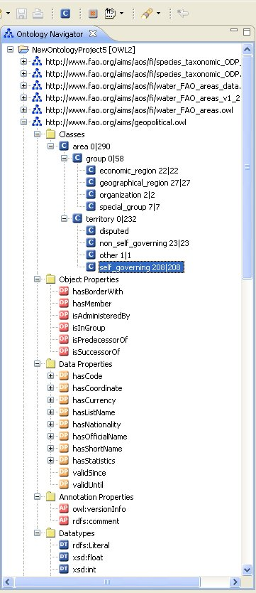
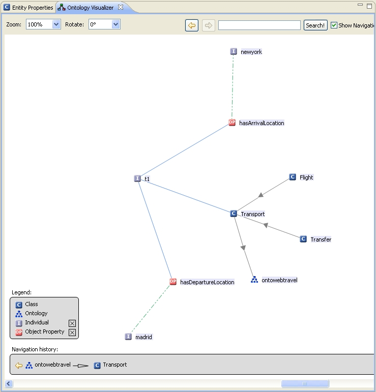

The Ontology Navigator displays the different OWL ontology projects and their corresponding ontologies. You are able to navigate within the hierarchically arranged elements. Furthermore, you can create, change and delete ontology elements. The different possibilities to edit the elements are listed in the appropriate context menu.

To open the context menu of an element, click on the element using the right mouse button. If an element contains further sub-elements, then a plus sign is displayed on the left side of the element. Please click on this plus sign to expand the sub-elements. In order to close the view of the sub-elements, click on the minus sign beside the upper element.
Many nodes that are displayed in this tree can be dragged-and-dropped in order to modify the hierarchical structure of the ontology. For example, a class can be moved to a new superclass by simply dragging it to the new location. When holding the Ctrl key and dragging a node then, you will see the mouse cursor change to contain a little "+" icon. When dropping an entity it will not be moved to the new location but it will be copied there, usually resulting in additional subClassOf or subPropertyOf axioms.
Within an OWL project the Ontology Navigator hosts different types of entities. When selecting one of the nodes, the corresponding Entity Property panel will display the details of the recently selected entity. The Ontology Navigator hosts the following types of entities:
The "Ontology Graph Visualize View" displays the ontology and all elements of the hierarchy (classes, individuals, object properties) in a graph. You can open the view by selecting "Show in Visualizer" in the context menu of an ontology element or a class element in the tree menu.

Functions:On the left side of the view a legend is displayed. Here you can activate or deactivate different ontology entities by selecting the checkboxes.
You can also enlarge or reduce the view of the graph. This can be achieved by changing the zoom value or by pressing Ctrl + to zoom in and Ctrl - to zoom out.
Graph elements:Grey arrows:
Represent the connection between super and subclasses or super class and ontology root.
Green arrows:
Represent the connection between individuals and object properties.
Blue arrows:
Represent the connection between classes and individuals, individuals and object properties, individuals and data properties.